A walk through the whole system: what a student, a teacher and an admin see, and what happens behind each click.
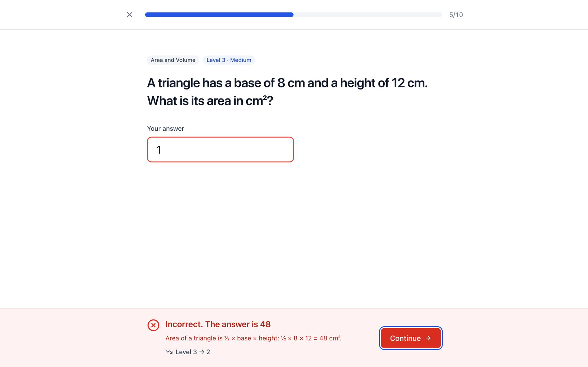
Contents
An adaptive maths practice platform for grades 6 to 8. Students practise; the questions get harder when they do well and easier when they struggle. Teachers see where the class is stuck. An admin manages accounts and can audit everything.
| Role | Goal |
|---|---|
| Student | Practise, get instant feedback, see progress, finish set homework |
| Teacher | Run classes, build quizzes, assign work, spot students who need help |
| Admin | Manage users and roles, read the audit log |
| Phase | Status |
|---|---|
| Week 1: foundation | Done |
| Week 2: core product | Done |
| Week 3: AI + MCP server | Next |
| Week 4: hardening, deploy | Planned |
Reading tip. Each section says what you see, then what happens behind it, then why it was built that way. File names are given so you can open the code next to this guide.
Where to read more. README.md (overview), SECURITY.md (controls), docs/adr/ (why decisions were made), docs/design.md (visual rules), CLAUDE.md (project memory and the scale rules).
Every endpoint is listed, with its allowed roles and input rules, at http://localhost:8080/api/docs. The page is generated from the same declarations the server uses to check requests, so it can never drift out of date. There are 30 endpoints.
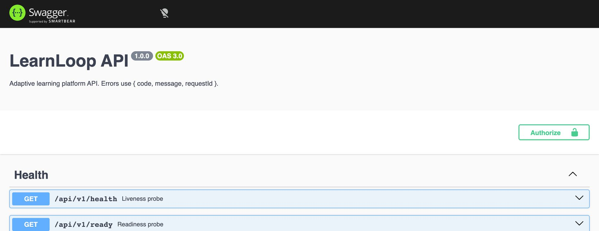
02 · Architecture
Five containers run together. The browser only ever talks to one address, localhost:8080.
| Part | Job | Where |
|---|---|---|
| Web app | The screens. Built with React, TypeScript and Vite, styled with Tailwind. It never touches the database; it only calls the API. | apps/web |
| nginx | Serves the built web files and forwards anything starting with /api to the API. This makes the app and API share one origin, which lets the strict cookies work. | infra/nginx.conf |
| API | The only thing that can read or write data. Every rule (who may do what, what input is valid, how difficulty adapts) lives here. | apps/api |
| PostgreSQL | Stores users, classes, questions, answers, scores and the audit log. Accessed through Prisma. | apps/api/prisma |
| Redis | Counts login attempts per IP and per account so brute-force guessing is blocked, even with several API servers. | middleware/rateLimit.ts |
| Shared package | The input rules (Zod schemas) and response shapes, used by both the web app and the API so they can never disagree. | packages/shared |
Why one API for everything? The web app and (in Week 3) the AI-facing MCP server both call the same API. So one set of permission checks, validation and audit logging protects every way into the data. There is no back door.
The repository: apps/web (front end) · apps/api (API, schema, seed, tests) · packages/shared (schemas and types) · infra (Docker, nginx) · apps/mcp-server (Week 3 placeholder) · docs (decisions, design, this guide).
03 · One request, start to end
Every action, from "Check answer" to "Approve question", travels the same path. Learn this path once and the rest of the system makes sense.
The key design idea. Each route is declared once (ApiModule.route in lib/route.ts) with its path, allowed roles and input shape. That one declaration drives the login check, the role check, validation and the API docs, so a route cannot exist without saying who may use it.
04 · Authentication
The login page shows what the product looks like on the right, and three demo buttons sign you in as each role.
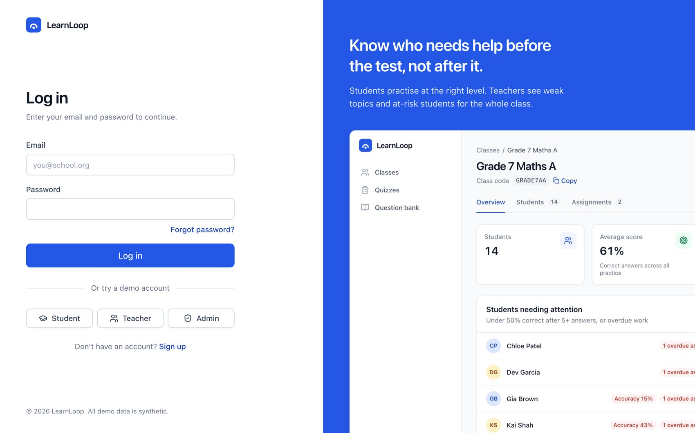
| Situation | What happens |
|---|---|
| Access token expires (15 min) | The web client quietly calls /auth/refresh using the cookie, gets a new access token, and retries the failed request. The user notices nothing. |
| Page reload | Memory is empty, so the app calls /auth/refresh first. If the cookie is valid, the session is restored. |
| Every refresh | The refresh token is rotated: the old one is marked used, a new one issued. All tokens from one login share a "family". |
| An old refresh token is replayed | That means it was stolen. The whole family is revoked, the attempt is audited, and everyone using that login is signed out. |
| Logout | The family is revoked and the cookies are cleared. |
| Admin disables an account | All its refresh tokens are revoked, and the per-request check rejects its access token immediately. |
Why this design? A stolen access token is only useful for 15 minutes. A stolen refresh token can be used once; after that, rotation exposes the theft. Keeping the access token out of storage means injected scripts can't lift it.
Password reset works the same careful way: a single-use link, valid 30 minutes, stored only as a hash, and the response is identical whether or not the email exists.
05 · The student journey
From login to the first question takes two clicks. The home page always offers exactly one best next action.
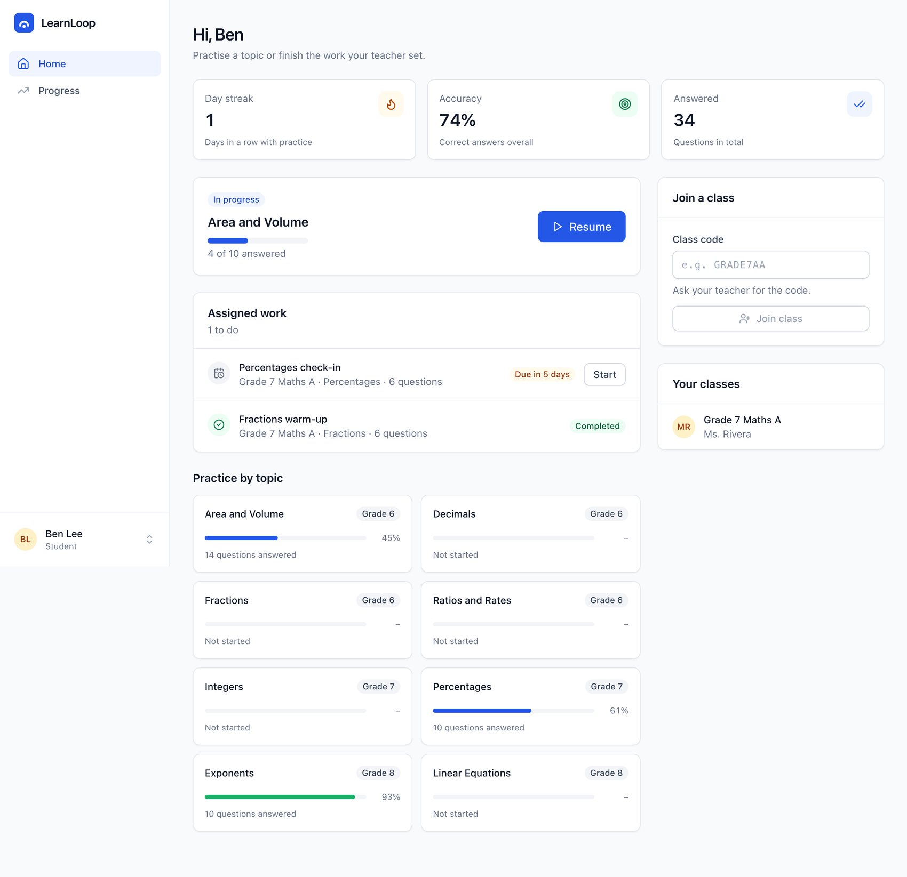
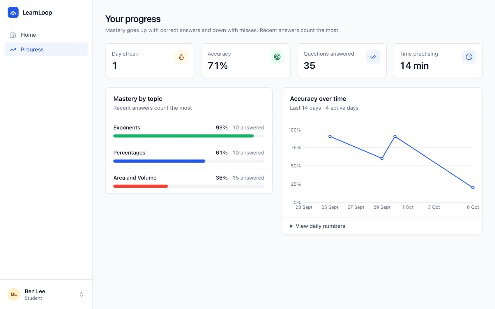
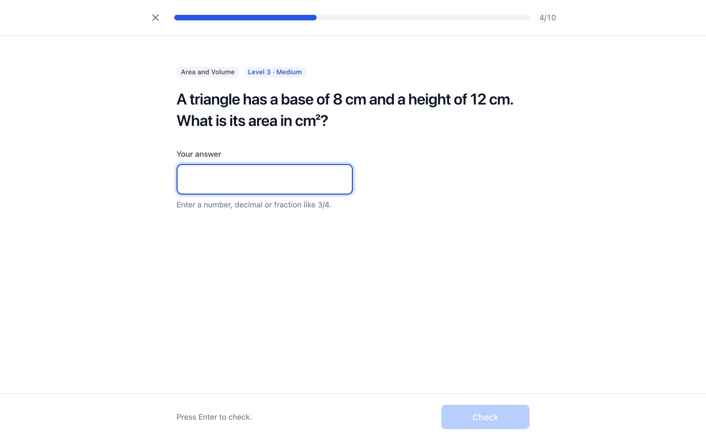
06 · Adaptive practice
The rule is deliberately simple so that a student can understand it: two right in a row, step up; two wrong in a row, ease off.
| Piece | How it works | File |
|---|---|---|
| Starting level | From the student's current mastery of the topic: none or below 40% starts at 2; below 70% at 3; above that at 4. | services/adaptive.ts |
| Streak counter | Stored on the session: +n after n right in a row, −n after n wrong. At ±2 the level moves one step and the streak resets, so "two in a row" always means two at the current level. Level stays within 1 to 5. | nextDifficulty() |
| Picking a question | A random approved question in the topic, near the target level, that the student hasn't seen in this session. If none is left the band widens (±1, ±2, ±4). | services/practice.ts |
| Mastery score | A running average for the first 5 answers, then a weighted average where recent answers count 20%. One bad answer can't wreck an established score. | updateMastery() |
| Checking the answer | On the server only. Numeric answers compare by value, so 3/4, 0.75 and 1,250 all work. The browser never receives the answer before submitting. | isAnswerCorrect() |
| Assigned quizzes | Do not adapt. They are a fixed set served in the teacher's order, and finishing marks the assignment as handed in. | services/practice.ts |
Double-click safe. Step 3's conditional update only succeeds once. Two simultaneous submissions of the same question produce one saved attempt and one polite "already answered" response. There's a test for exactly this.
07 · The teacher journey
A teacher's loop: create a class, give students the code, assign work, then use the dashboard to see who needs help.
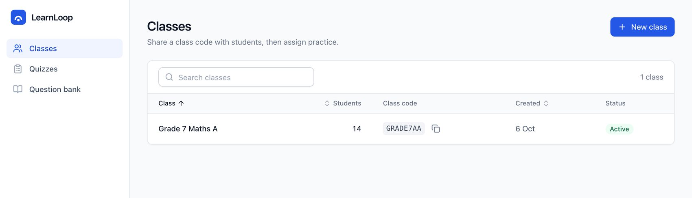
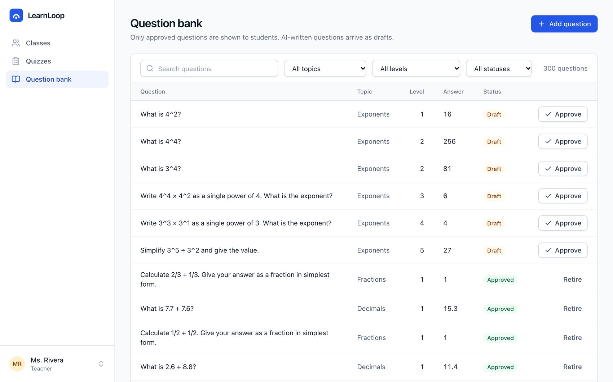
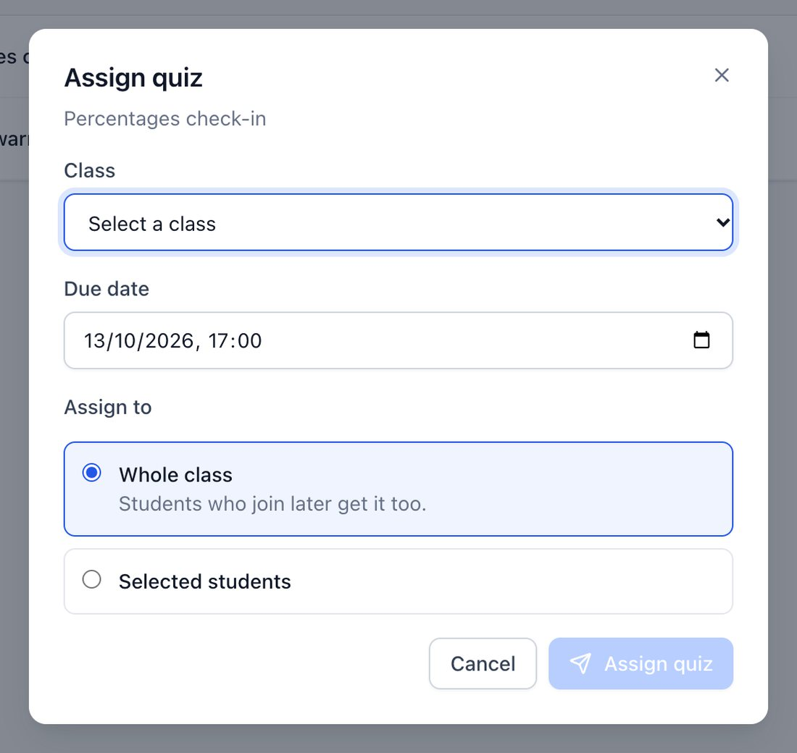
Pick the class, a due date and who gets it. Choosing "selected students" only allows students actually in that class. Past due dates and archived classes are refused.
Each chosen student gets an assignment slot. When they finish the quiz the slot is marked handed in, and that drives the completion figures below.
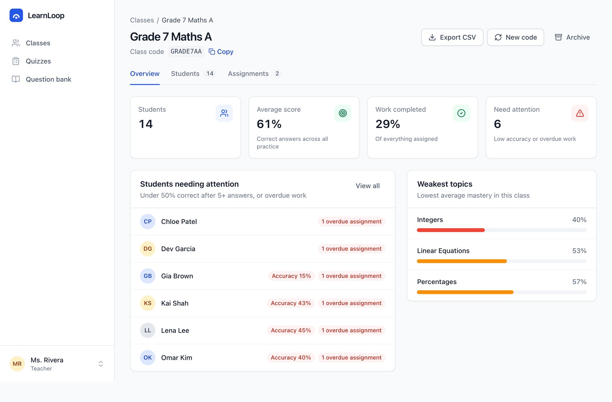
| Average score | Average accuracy of students who have answered at least once. |
| Work completed | Finished assignment slots divided by all slots. |
| Need attention | At least 5 answers with accuracy under 50%, or any overdue assignment. Reasons are shown by the name. |
| Weakest topics | The three topics with the lowest average mastery. |
| Export CSV | Downloads the student table. Cells starting with = + - @ are escaped so a bad name can't run as a spreadsheet formula. |
Ownership. A teacher can only open their own classes and the students in them. Changing an ID in the URL to another teacher's class returns 403, and a test proves it.
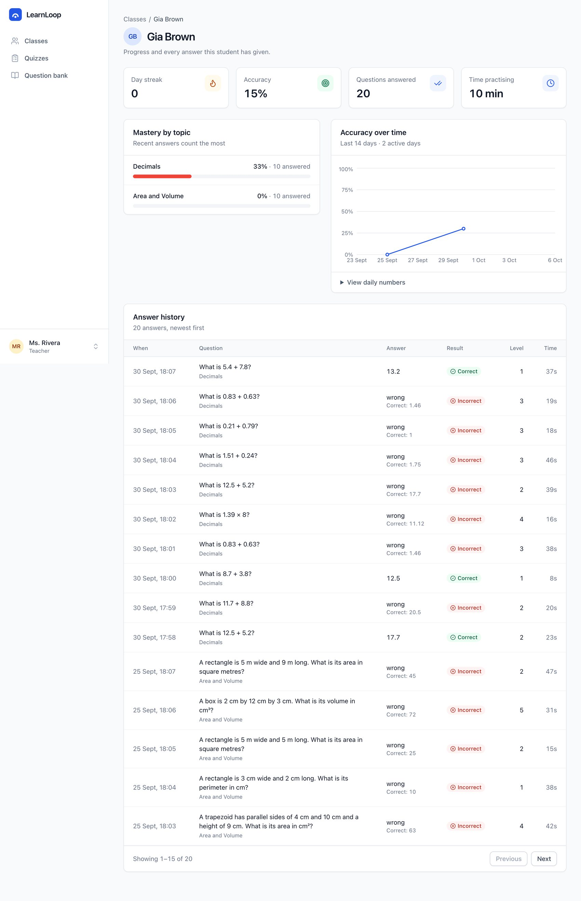
Clicking a name from the dashboard opens the same progress view the student sees: streak, accuracy, mastery per topic and the 14-day trend.
Below it is every answer the student has given, newest first: when, the question, what they typed, whether it was right or wrong, the level, and the time taken. For wrong answers the key is shown too, so a teacher can see what mistake was made, not just that one was.
This is the page to open before a parent meeting or a revision lesson.
Access. A teacher can open a student only if that student is enrolled in one of their classes. Any other student returns 403.
08 · The admin journey
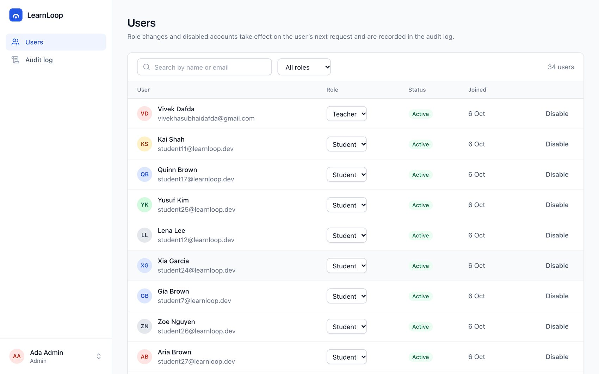
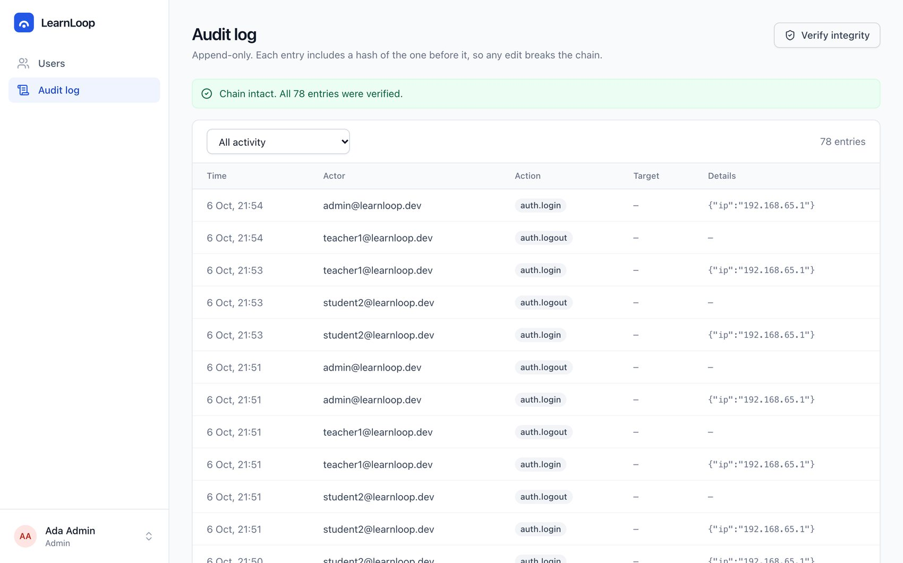
09 · The database
PostgreSQL 16, accessed through Prisma. 16 tables. You can open it in DBeaver at localhost:5432 (user, password and database are all learnloop in development).
Redis holds only temporary counters (login rate limits). If it were wiped, nothing important would be lost.
10 · Security
Security was built in from week 1. Each layer assumes the one before it might fail.
| Layer | Control | Stops |
|---|---|---|
| Network | Strict security headers (CSP, HSTS, no framing, no sniffing), CORS only for known origins, 100 KB body limit | Script injection, clickjacking, oversized requests |
| Sessions | 15-minute access tokens in memory; rotating refresh tokens in HttpOnly SameSite=Strict cookies; double-submit CSRF token | Token theft, forged cross-site requests |
| Passwords | Argon2id, 12-character minimum, same response for unknown email and wrong password | Cracking after a leak, account discovery |
| Abuse | Rate limits per IP and per account on login, signup, reset and join codes (Redis) | Brute-force and code guessing |
| Access | Role check on every route, plus an ownership check on every route with an ID; the user is re-read from the database on every request | Students reading each other's data, stale permissions |
| Input | Zod schemas on body, params and query; unknown fields rejected; Prisma only (no hand-built SQL); React escaping | Injection of all kinds |
| Errors | One safe shape: { code, message, requestId } | Leaking stack traces, SQL or secrets |
| Records | Hash-chained audit log with a database trigger | Quietly rewriting history |
| Supply chain | Dependency audit, CodeQL, secret scanning, Docker image scanning, Dependabot; non-root containers | Vulnerable packages, leaked keys |
The most common web bug is a student changing an ID in the address bar to see someone else's data. Here every ID route goes through services/access.ts, and the tests try exactly that attack for students and teachers and expect a 403.
The full control-by-control list, with the OWASP Top 10 mapping and the threat model, is in SECURITY.md.
11 · Testing and CI/CD
| Suite | Tests | What it covers |
|---|---|---|
| Shared | 15 | Input rules, number parsing |
| API | 128 | Rules, endpoints, security, a real Postgres database |
| Web | 11 | Components, tabs, sorting, toasts, login flow |
API line coverage is 85%; the requirement is 80%, and the build fails below it.
All 154 pass, with lint, type-check, formatting and the production build also clean.
High or critical security findings fail the build. End-to-end browser tests, accessibility scans and a load test arrive in week 4.
12 · Running it
docker compose -f infra/docker-compose.yml up --build then open http://localhost:8080. The API applies the database migrations and loads the demo data the first time it starts.
npm install, copy .env.example to .env, start only the databases with docker compose -f infra/docker-compose.yml up -d postgres redis, then npm run db:migrate && npm run db:seed && npm run dev. The web app is on port 5173 and the API on 4000.
| Role | Notes | |
|---|---|---|
| Student | student2@learnloop.dev | In Grade 7 Maths A, with history |
| Student | student1@learnloop.dev | Not in a class: try code GRADE7AA |
| Teacher | teacher1@learnloop.dev | Owns Grade 7 Maths A |
| Admin | admin@learnloop.dev | Users and audit log |
Password for all: LearnLoop!2026
| npm test | All 154 tests (needs the database running) |
| npm run lint && npm run typecheck | Code quality checks |
| npx tsx prisma/seed.ts --reset | Restore the demo data (run in apps/api) |
The interface follows the conventions of real product UIs rather than a decorative theme. After two earlier attempts that still looked auto-generated, the rules were written down in docs/design.md.
13 · Scaling and next steps
The project rule is to design everything so it still works with far more users: 100,000 or more students, and a whole school logging in at 9:00.
| Where | Problem at scale | Planned fix |
|---|---|---|
| Audit log writes | One lock serialises every audited action (each login) | Shard the chain, or write through a queue |
| Every request | One database read to re-check role and status | Cache in Redis for about a minute |
| Choosing the next question | Random pick scans more rows as the bank grows | Indexed random key or per-level pools |
| Class dashboard | Recomputed from scratch on each load | Cache per class, or keep running counters |
| Big history tables | Page-number paging gets slow deep in the list | Cursor-based paging |
| Container start-up | Each replica runs migrations and seeding | One migration job at deploy time |
Week 3: AI and the MCP server
Week 4: hardening and release